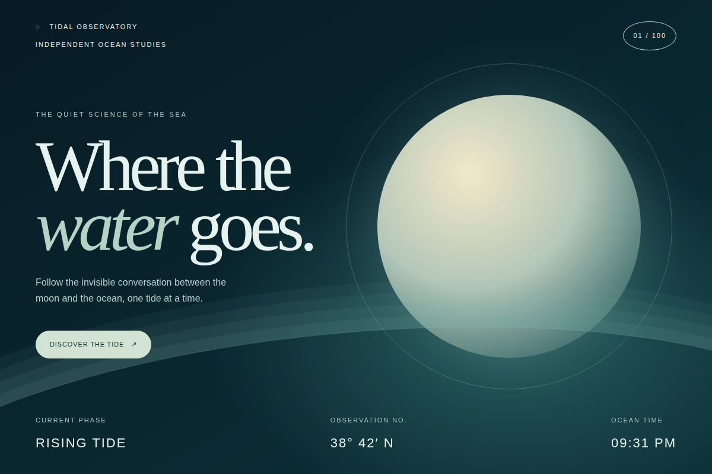

VIEW STUDY ↗Tidal Observatory
A poetic scientific field station turns the relationship between moon and sea into a quiet, immersive editorial composition.
Open study ↗
Read prompt +
RECREATION BRIEF VIEW .TXT ↗
Title: Tidal Observatory Prompt: Create a standalone, responsive ocean observatory landing page titled “Where the water goes.” Use a deep ink and sea-glass palette, oversized editorial serif typography, a luminous CSS moon, elliptical tide lines, subtle drifting motion, and restrained scientific metadata. Include a live local clock and a button that toggles the tide phase. Use only inline CSS and JavaScript; support reduced motion and offline use. Description: A poetic scientific field station turns the relationship between moon and sea into a quiet, immersive editorial composition. Visual techniques: radial gradients, CSS sphere, elliptical linework, layered atmosphere, oversized typography, subtle animation. Interaction model: The discovery button toggles the displayed tide phase; the clock shows local time.